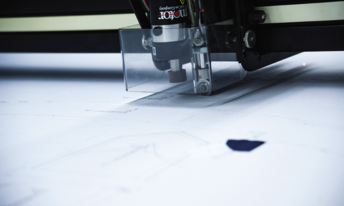
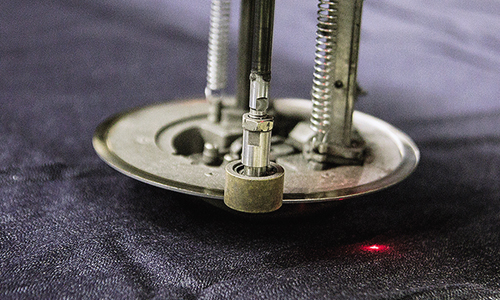
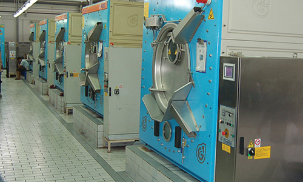
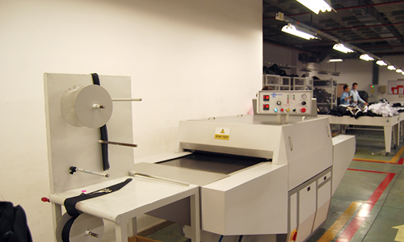

1. Briefing & Konzept
Ziele, Stückzahlen, Budget, Timeline. Skizzen/Referenzen oder Tech Pack willkommen.
- Materialvorschläge & passende Grammaturen
- CI-Vorgaben & Brandingoptionen (Stick/Druck/Labels)
- Erste Machbarkeits- und Risikoanalyse

Transparent, planbar, industriell: Von der ersten Skizze bis zur Auslieferung. Mit QC-Gates, sauberer Doku und verlässlichen Timelines.
Ziele, Stückzahlen, Budget, Timeline. Skizzen/Referenzen oder Tech Pack willkommen.
Wareneingangskontrolle nach Spezifikation, Lagerung klimaneutral.

Schnittbilder per CAD, effizienter Wareneinsatz, exakte Größenläufe.

Linienaufbau nach Produkt: Jersey, Webware, Denim, Workwear.

Je nach Produkt: Drucken, Sticken, Wascheffekte, Thermofixierung.

Finale Prüfung & vollständiges Branding vor dem Verpacken.

Export-Ready: sauber gepackt, palettiert und etikettiert.

Ein definierter Ablauf sorgt dafür, dass Anforderungen zu Materialien, Passform, Branding und Verarbeitung nicht zwischen den Projektphasen verloren gehen.
Wenn Sampling, Freigaben, Produktionsfenster und QC-Gates sauber geplant sind, werden Zeit, Kosten und Risiken deutlich realistischer eingeschätzt.
Dokumentierte QC-Gates, Chargen und Produktionsschritte schaffen die Grundlage für wiederholbare Qualität. Das ist besonders wichtig, wenn erfolgreiche Artikel erneut bestellt oder in neue Farben und Größen ausgeweitet werden.
Fotos, Skizzen, Maßtabellen oder Tech Packs helfen, den B2B Textilproduktion Prozess sauber zu starten.
Farben, Größenläufe und geplante Mengen beeinflussen Fabrik-Matching, Materialbedarf und spätere Logistik.
Veredelung, Labels, Verpackung und gewünschte Prüfungen definieren Aufwand, Timing und das finale Preisniveau.
Ein guter Produktionsprozess ist in der B2B Textilproduktion nicht nur eine interne Checkliste, sondern ein echter Wettbewerbsvorteil. Er sorgt dafür, dass Sampling, Materialfreigaben, Passform, Branding, Qualitätskontrolle und Serienfertigung aufeinander abgestimmt bleiben. Genau das reduziert Fehlinterpretationen und schafft mehr Sicherheit bei Lieferterminen, Preisplanung und Reorders.
Für Private Label Bekleidung und OEM Bekleidung ist das besonders wichtig, weil jede Entscheidung in frühen Phasen spätere Kosten und Qualität beeinflusst. Ein sauber dokumentierter Ablauf verhindert, dass Informationen verloren gehen oder erst am Ende sichtbar wird, dass ein Detail technisch nicht sauber umsetzbar ist.
Darum arbeiten wir mit einem transparenten Modell, das von Briefing und Produktdefinition bis zu Bulk Production und Logistik nachvollziehbar bleibt. Kunden wissen, welche Freigaben anstehen, welche Punkte gerade geprüft werden und an welcher Stelle sich Änderungen noch sinnvoll umsetzen lassen. Das spart Zeit, senkt Risiken und stärkt die Qualität über den gesamten Produktionsprozess hinweg.
Gerade bei wiederkehrenden Programmen, Kollektionen mit Varianten oder mehreren Produktgruppen macht sich dieser strukturierte Ansatz besonders schnell bezahlt.